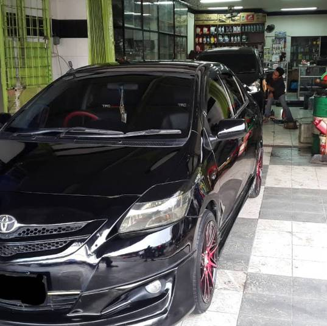

Bengkel Terbaik Jakarta

KJS Motor – Spesialis Bengkel Mesin & Transmisi Mobil Jakarta
Cengkareng, Jakarta Barat
Bengkel Mobil BOS Kedoya
Kb.Jeruk, Jakarta Barat
Dokter Mobil – Bengkel Service AC & Tune Up Mobil
Kelapa Gading, Jakarta Barat

VARIA 2000 ( Auto Car Workshop )
Cengkareng, Jakarta Barat

Kudamas Autoindo
Tj. Priok, Jakarta Barat